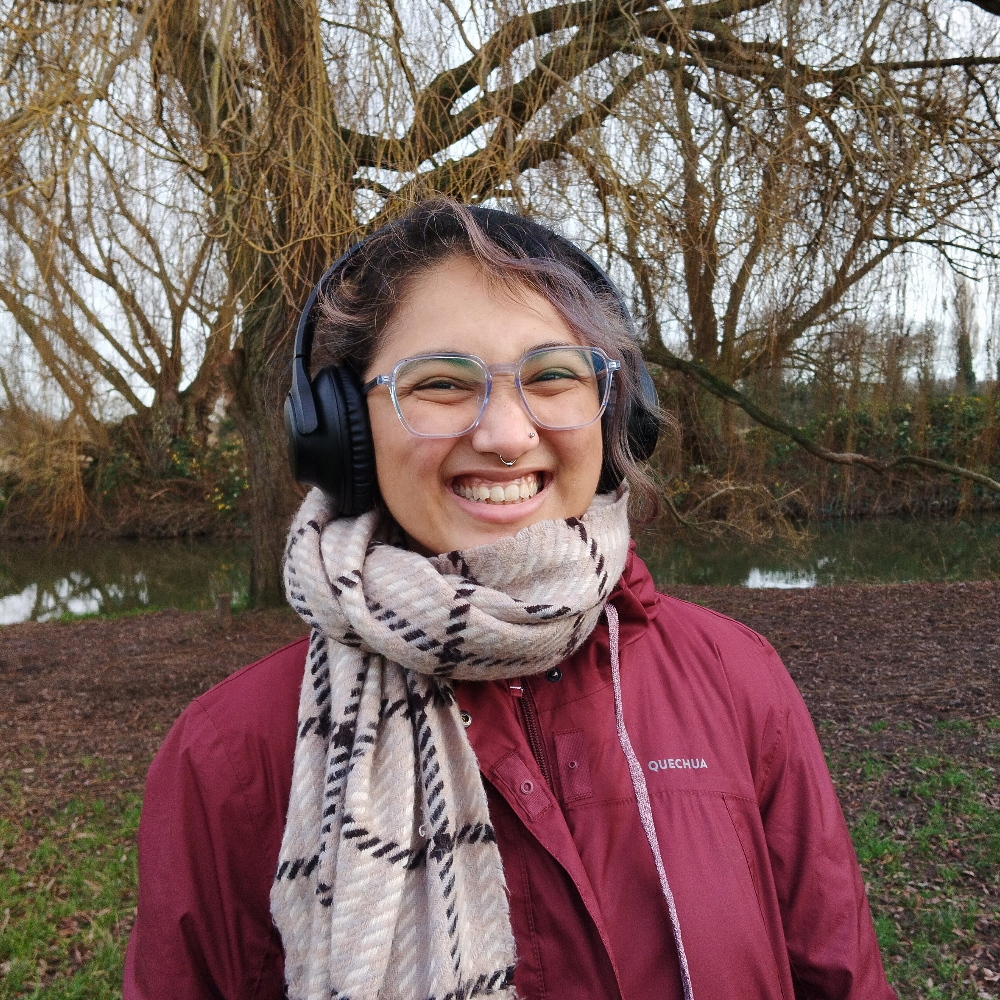

Welcome to my webpage! I am a second year PhD student at the London School of Geometry and Number Theory, working under the supervision of Vladimir Dokchitser. I am interested in algebraic number theory and arithmetic geometry.
Before this, I completed a Master's degree (Part III) at the University of Cambridge, UK. I earned my undergraduate degree and a postgraduate diploma in Mathematics from Ashoka University, India.
I enjoy numbers as much as I do colours. On this page, you may find my research, some mathematical exposition and outreach activities.

with A. Fan, J. Montemurro, P. Motakis, A. Rusonik, P. Skoufranis, and N. Tobin.
with J. Bennett, J. Hatley, S. Kononova, V. Macri, and Z. Porat.
|
May 2026
|
Minimal models, Jacobians and Néron models,
King's College London • London Number Theory Study Group
|
|
Apr 2026
|
Is this clickbait?
Cheltenham, UK • WINGs 2026
|
|
Feb 2026
|
Global Class Field Theory study group
University College London • London Number Theory Study Group
|
|
Nov 2025
|
Torsion on hyperelliptic curves
University College London • Study group on hyperelliptic curves
|
|
Oct 2025
|
Recovering reduction types of elliptic curves
King's College London • London Junior Number Theory Seminar
|
These are notes I've compiled over several years, which I hope will be helpful to anyone seeking an introduction (ish). My writing and understanding have certainly improved over time, so I apologise for any earlier mistakes.
LSGNT mini-project done under the supervision of Beth Romano in 2025.
My Part III essay done under the supervision of Jack Thorne in 2024.
Notes I took while preparing for my undergrad thesis with Kumarjit Saha in 2022.
Done under Prof. Inder Bir Passi as a part of a summer project in 2020.
Hi there! If you'd like to chat about math, need help with applications, or are looking for some mentoring, I'm always happy to hear from you, just drop me an email! I have also listed below some initiatives in case you wish to get involved yourself.
I am an illustrator and editor at Chalkdust magazine. Check out issue 23 here!
If you identify as a woman/non-binary and are in STEM at Ashoka, I mentor some students through the Ashoka University Women in STEM (AUWS) society.
• I am part of the London Maths Outreach (LMO). We run free super-curricular maths classes for students from Years 10 to 13.
• I have been a part of some mathematics taster sessions for Year 12 organised via the University of London.
• If you're a Year 12 high school student in London, I run some problem solving classes with UCL, where we do some fun maths. You can request your school to sign up by dropping an email to Dr. Luciano Rila (l.rila@ucl.ac.uk).
• If you're in classes between VIII-XI in India, the Lodha Genius Programme at Ashoka is a great way to get introduced to some college-level maths and science. It is a fully funded programme.
• If you're a high school student anywhere in India, I recommend the Young Scholar's Programme at Ashoka, where you get an introduction to liberal arts (and some maths!). There are need-based scholarships available.
I occasionally dabble in some art.